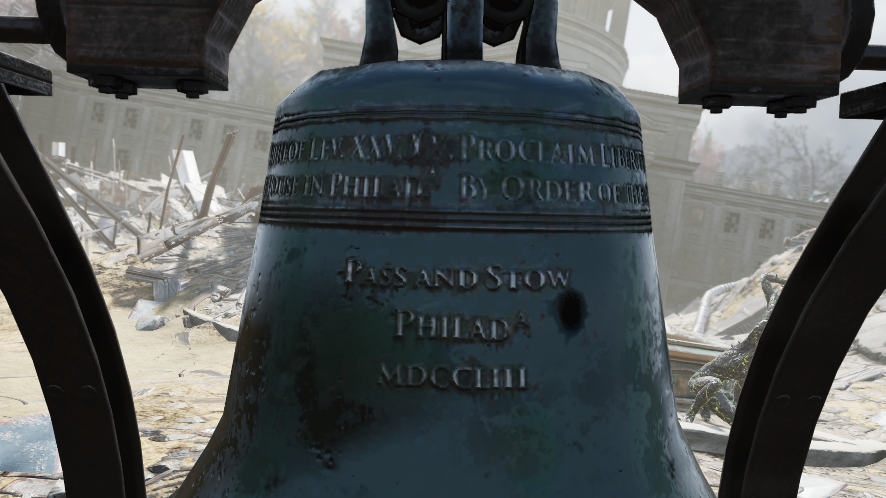
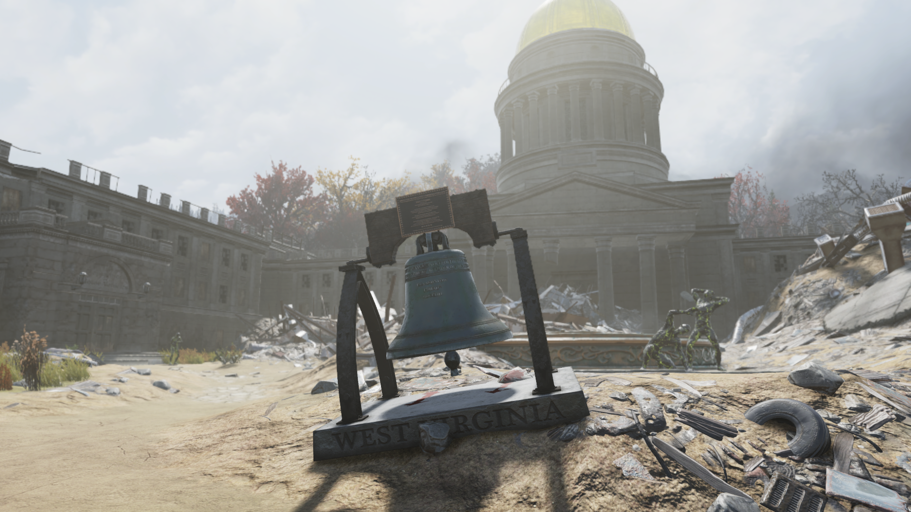
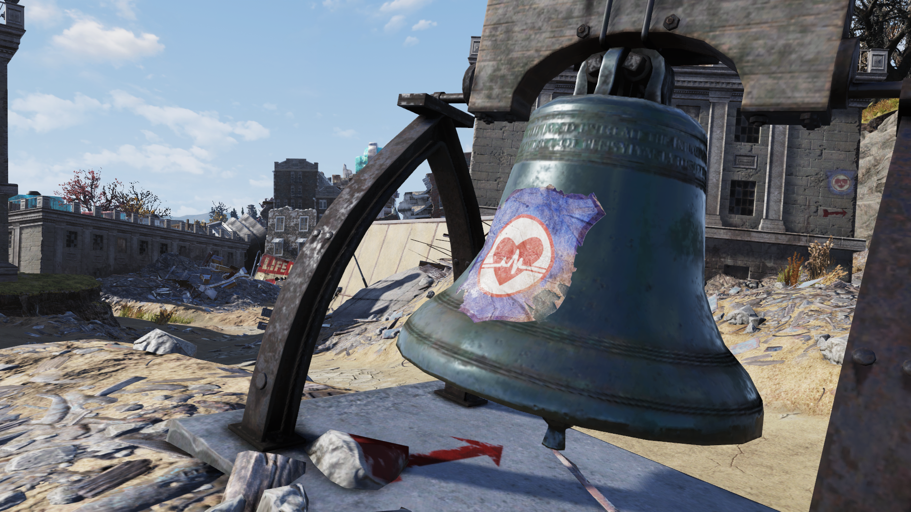

Liberty Bell
自由の鐘
「この地のすべての住民に、自由を宣言せよ」
——自由の鐘とそのレプリカに刻まれた碑文（レビ記25章10節）
背景
自由の鐘（Liberty Bell）は、フィラデルフィアにあるアメリカ独立の象徴です。
Fallout 3で言及され、Fallout 76ではそのレプリカがワールドオブジェクトとして登場します。
アパラチアで見られるのは、本物と同じ寸法・音色を持つフランス製の複製品です。
1950年、当時の合衆国財務長官ジョン・W・スナイダーの指示により、ウェストバージニア州の人々に寄贈されました。
1950年5月15日から7月4日まで、合衆国貯蓄債券独立運動キャンペーンの一環として州内各地を巡回し、その後チャールストン議事堂ビルの正面に設置されました。
2077年の大戦と2082年のクリスマス洪水を生き延び、レプリカの鐘は議事堂ビルの前に今も残っています。
プラカードと鐘自体の碑文は、今でも読むことができます。
23世紀、リベット・シティのアメリカ遺物収集家エイブラハム・ワシントンは、本物の自由の鐘の破片を持っていると主張する人物に出会いました。
ワシントンは「まだフィラデルフィアの廃墟に無傷で残っているはずだ」と懐疑的でしたが、それを回収して首都保存協会に展示するための遠征を計画し、資金を提供し始めました。
碑文
あなたに捧ぐ
この自由の鐘のレプリカは
ウェストバージニア州の人々に
財務長官ジョン・W・スナイダー閣下の
指示により寄贈されました
合衆国貯蓄債券独立運動の
象徴として
1950年5月15日から7月4日まで
本州の各地で展示されました
寸法と音色は
1776年に独立を告げた
オリジナルの自由の鐘と同一です
この象徴の前に立つことで
あなたには建国の父たちと同様に
我が国が掲げる個人の自由の原則に
身を捧げる機会があります
＊ ＊ ＊ ＊ ＊
この鐘は1950年にフランスで
鋳造された53個のうちのひとつです

この地のすべての住民に自由を宣言せよ
レビ記25章10節
ペンシルベニア植民地議会の命により
フィラデルフィアのステートハウスのために
═══════════════════════════
Pass and Stow
フィラデルフィア
MDCCLIII（1753年）
現実の自由の鐘
現実の自由の鐘（Liberty Bell）は、アメリカの独立と自由の象徴として世界的に知られる歴史的遺物です。
歴史
1752年、ペンシルベニア植民地議会の命により、ロンドンのホワイトチャペル・ベル鋳造所で製造されました。
しかしフィラデルフィアに到着した直後にひびが入り、地元の鋳造工ジョン・パスとジョン・ストウが2度にわたり鋳直しを行いました——鐘に刻まれた「Pass and Stow / Philadᵃ / MDCCLIII」はこの2人の名前と鋳造年（1753年）を記録しています。
1776年7月8日、独立宣言の初めての公開朗読の際にこの鐘が鳴らされたと伝えられていますが、これを裏付ける確かな歴史的記録はなく、以降もフィラデルフィアのステートハウス（現：独立記念館）で公的な集会や告知のために使用されていました。
鐘に刻まれた「Proclaim LIBERTY Throughout all the Land unto all the Inhabitants Thereof（この地のすべての住民に自由を宣言せよ）」は旧約聖書レビ記25章10節からの引用で、もともとはペンシルベニア植民地のウィリアム・ペン勅許状50周年を記念する意味で選ばれました。
しかし19世紀に奴隷制度廃止運動がこの碑文を自らのシンボルとして採用したことで、鐘は「Liberty Bell（自由の鐘）」という名前で呼ばれるようになりました。
ひび割れ
自由の鐘の最も有名な特徴は、そのひび割れです。
1840年代のいずれかの時点で大きな亀裂が生じ、1846年のジョージ・ワシントン誕生日記念式典で最後に鳴らされた際に亀裂がさらに拡がり、以後二度と鳴らされることはありませんでした。
レプリカ
ゲーム内に登場するレプリカは、1950年にフランスの鋳造所が合衆国財務省のために製造した53個のレプリカのひとつです。
当時の合衆国貯蓄債券キャンペーンの一環として全米各州、ワシントンD.C.、および各海外領土に1個ずつ寄贈されました。
ウェストバージニア州に贈られたレプリカは、現実でも州議事堂の敷地内に設置されており、ゲーム内の設置場所はこの現実を忠実に再現しています。
登場作品
Liberty BellはFallout 3で言及され、Fallout 76ではレプリカがワールドオブジェクトとして登場します。
ギャラリー


Fallout世界では自由の鐘は二重の皮肉をまとっています。
まずゲーム内のレプリカ。1950年に「自由な土地に生きる自由な市民に捧ぐ」と碑文が刻まれたこの鐘は、2077年の核戦争で自由もろとも灰になった世界にぽつんと残されています。
プラカードの「この象徴の前に立つことで、建国の父たちと同様に個人の自由の原則に身を捧げる機会がある」という一文は、スコーチやフェラル・グールが徘徊するチャールストンの廃墟では痛烈なブラックユーモアです。
そしてFallout 3でのエイブラハム・ワシントンの下り——200年後の荒野で、本物の自由の鐘を回収するための遠征を計画する男。
「まだフィラデルフィアに無傷で残っているはずだ」と言い張る彼の楽観主義は、Fallout世界のアメリカ人が物理的な遺物に執着することで、とっくに失われた「自由」という概念を取り戻そうとする姿の象徴かもしれません。
現実の自由の鐘は1846年以降、二度と鳴らされていません。
だからこそ「鳴らない鐘」は自由の不完全さを、ひび割れは建国理念と現実の乖離を表すシンボルとして、時代を超えて人々の心を打ち続けています。
Falloutの世界はその乖離を核戦争で究極まで押し進めた——「すべての住民に自由を宣言せよ」と刻まれた鐘だけが残り、宣言すべき住民はもういない。
This article was created by translating and editing Liberty Bell from Nukapedia: The Fallout Wiki.
Licensed under the Creative Commons Attribution-Share Alike License (CC BY-SA 3.0).
コミュニティ維持のため、寄付を受け付けております。
> COMMENTS